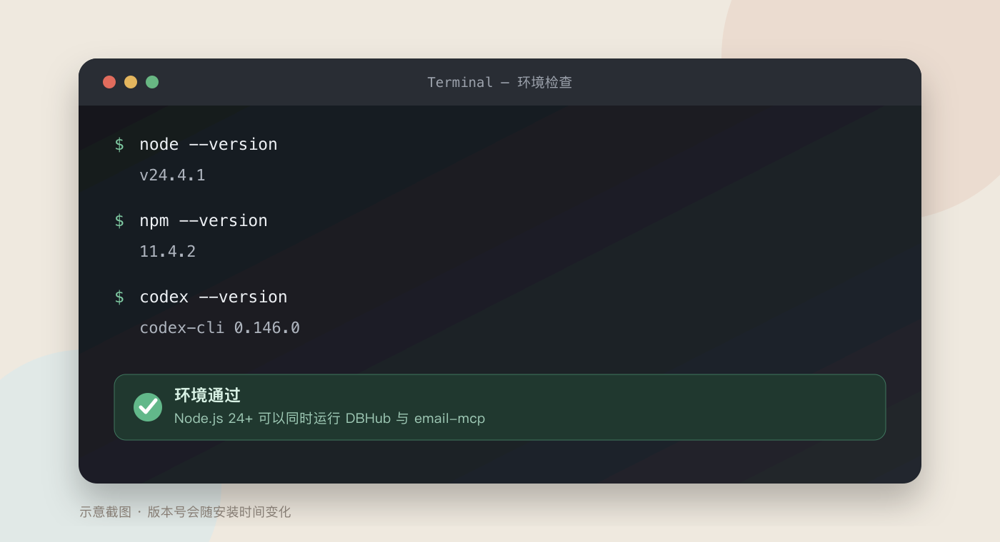
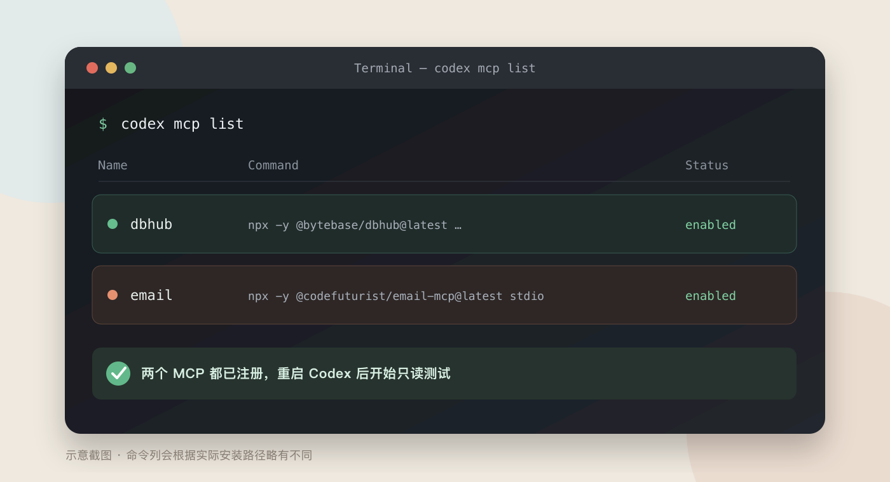

连接邮箱
使用 @codefuturist/email-mcp，让 Codex、Claude、WorkBuddy 等 Agent 读取和处理你的邮件。
获取邮箱授权码
先在邮箱网页中开启 IMAP/SMTP，再生成客户端授权码。
网易 163 邮箱
- 登录 163 网页邮箱，进入设置。
- 找到 POP3/SMTP/IMAP 或"客户端授权密码"。
- 开启 IMAP/SMTP，完成手机验证并生成授权码。
- 配置 email-mcp 时，用户名填完整邮箱地址，密码填授权码。
IMAP imap.163.com:993SMTP smtp.163.com:465
网易 163 企业邮箱
- 登录企业邮箱 Webmail，进入设置 → 账户与安全 / 客户端设置。
- 生成"客户端授权码"或"客户端专用密码"。
- 如果没有此入口，请联系企业管理员开启 IMAP/SMTP 和客户端登录。
- 服务器和端口以企业邮箱后台的"客户端设置"页为准。
常见 IMAP imap.qiye.163.com:993SMTP 以企业后台为准
QQ 邮箱
- 登录 QQ 邮箱网页版，进入设置 → 账号与安全。
- 找到并开启 IMAP/SMTP 服务。
- 完成身份验证，生成授权码。
- 配置 email-mcp 时，密码填写授权码，不填 QQ 密码。
IMAP imap.qq.com:993SMTP smtp.qq.com:465
其他常见邮箱参数
| 邮箱 | 凭据 | IMAP | SMTP |
|---|---|---|---|
| 腾讯企业邮箱 | 客户端专用密码 | imap.exmail.qq.com:993 |
smtp.exmail.qq.com:465 |
| Gmail | 开启两步验证后生成 App Password | imap.gmail.com:993 |
smtp.gmail.com:465 |
| iCloud Mail | Apple Account 的 App 专用密码 | imap.mail.me.com:993 |
smtp.mail.me.com:587 |
| Outlook / M365 | 优先 OAuth2，受账户和企业策略限制 | outlook.office365.com:993 |
smtp-mail.outlook.com:587 |
企业邮箱没有授权码入口时，请联系管理员，不要绕过公司的安全策略。
让 Agent 帮你安装
把下面这段话发给能够操作终端的 Agent。
帮我在这台电脑安装并配置 @codefuturist/email-mcp。先检查 Node.js 是否为 22 或更高版本，只使用官方 npm 包。需要邮箱授权码时必须停下来，让我本人在终端中输入，不要读取、回显或记录授权码。配置完成后，为当前 Agent 注册 MCP，默认开启只读模式，最后测试连接，并用 list_accounts 和 check_health 验证结果。修改系统或 Agent 配置前，先告诉我会修改什么。
注意："Agent 自动安装"不代表把授权码发给 Agent。安全的做法是在密码输入环节停下来，由你本人操作。
手动安装
适合第一次使用，整个过程大约 5 分钟。
email-mcp 需要 Node.js 22 或更高版本。在终端中运行以下命令确认：
node --version如果版本低于 22，请先升级 Node.js（推荐通过 nvm 或官方安装包）。

向导会带你添加邮箱、测试连接并注册 MCP。
npx @codefuturist/email-mcp setup
出现密码输入框时，由你本人输入上一节生成的授权码，不要粘贴到任何文件里。

如果向导流程中断，可逐条执行以下命令：
npx -y @codefuturist/email-mcp account add
npx -y
@codefuturist/email-mcp test
npx -y @codefuturist/email-mcp
install

第一次接入先不要开放发信、删除和移动邮件。
npx -y @codefuturist/email-mcp config edit
在配置中将 Read-only mode 设置为开启。
read_only，将其值设为
true
完全退出并重新打开 Codex、Claude 或 WorkBuddy，让 MCP 配置生效。
重新打开 → 让 Agent 重新加载 MCP
安装完成后验收
先确认读取正常，再考虑开放更多权限。
- Agent 能调用
list_accounts列出正确的邮箱账户。 check_health没有 IMAP/SMTP 认证错误。- Agent 能读取最近几封邮件的主题，但不能发送、删除或移动邮件。
- 授权码没有出现在 Prompt、项目文件、截图或 Git 记录中。
请检查 email-mcp 的连接状态，列出已连接的邮箱账户，然后只读取最近 3 封邮件的发件人和主题，不要发送、删除或移动任何邮件。